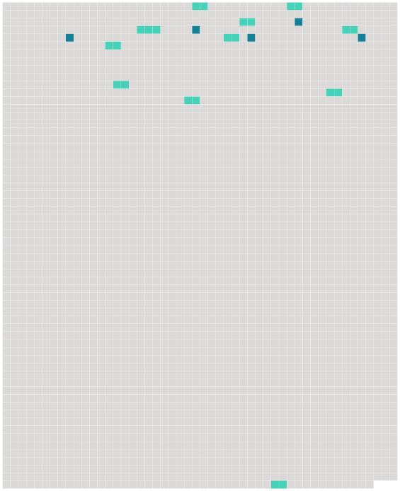

Longueur nb maillons : 16 mentions |
 |
Les déclarations de naissance seront faites dans les trois jours de l'accouchement, à l'officier de l'état civil du lieu : [l'enfant] lui sera présenté. [1 phrases]
La naissance de [l'enfant] sera déclarée par le père, ou à défaut du père, par les docteurs en médecine ou en chirurgie sages-femmes, officiers de santé ou autres personnes qui auront assisté à l'accouchement ; et lorsque la mère sera accouchée hors de son domicile, par la personne chez qui elle sera accouchée. [2 phrases]
L'acte de naissance énoncera le jour, l'heure et le lieu de la naissance le sexe de [l'enfant] , et les prénoms qui [lui] seront donnés, les prénoms, noms, profession et domicile des père et mère, et ceux des témoins. [1 phrases] Toute personne qui aura trouvé [un enfant nouveau-né] , sera tenue de [le] remettre à l'officier de l'état civil, ainsi que les vêtemens et autres effets trouvés avec [l'enfant] , et de déclarer toutes les circonstances du temps et du lieu où [il] aura été trouvé. Il en sera dressé un procès-verbal détaillé qui énoncera en outre l'âge apparent de [l'enfant] , [son] sexe, les noms qui lui seront donnés l'autorité civile à laquelle [il] sera remis. [2 phrases] S'il naît [un enfant] pendant un voyage de mer, l'acte de naissance sera dressé dans les vingt quatre heures en présence du père, s'il est présent et de deux témoins pris parmi les officiers du bâtiment, ou, à leur défaut, parmi les hommes de l'équipage. [4 phrases]
L'une de ces expéditions restera déposée au bureau de l'inscription maritime ou à la chancellerie du commissariat l'autre sera envoyée au Ministre de la marine, qui fera parvenir une copie, de lui certifiée, de chacun desdites actes, à l'officier de l'état civil du domicile du père de [l'enfant] , ou de la méfie si le père est inconnu cette copie sera inscrite de suite sur les registres. [1 phrases]
À l'arrivée du bâtiment dans le port du désarmement, le rôle d'équipage sera déposé au bureau du préposé à l'inscription maritime, qui enverra une expédition de l'acte de naissance, de lui signée, à l'officier de l'état civil du domicile du père de [l'enfant] , ou de la mère, si le père est inconnu : cette expédition sera inscrite de suite sur les registres. [1 phrases]
L'acte de reconnaissance d' [un enfant] sera inscrit sur ks registres, à sa date ; et il en sera fait mention en marge de l'acte de naissance, s'il en existe un. [92 phrases]
L'officier chargé de la tenue du registre de l'état civil devra, dans les dix jours qui suivront l'inscription d'un acte, de naissance audit registre, en adresser un extrait à l'officier de l'état civil du dernier domicile du père de [l'enfant] , ou de la mère si le père est inconnu. |
 |
Il est possible de télécharger la ressource sur la page Ortolang |
Si vous avez des questions ou vous voyez des erreurs, merci d'envoyer un mail à silvia.federzoni89@gmail.com |